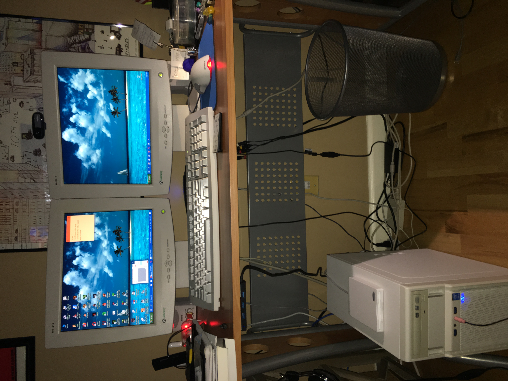

MY PROJECTS 
& HOBBYS
I have a strong passion for computers, technology, and exploring the history of computing. My hobbies include retro computing, vintage hardware, classic video games, and experimenting with different operating systems. I enjoy collecting and restoring older gaming consoles, working with MS-DOS and Windows 98 systems, exploring the world of BBS (Bulletin Board Systems), and learning about the evolution of computer hardware and networking. I appreciate both the history of technology and how modern systems have evolved from it.

Throughout my personal projects, I have developed practical experience with computer hardware, operating systems, software configuration, and networking fundamentals. I have worked with Linux Mint, Windows 10, Windows 98, and DOS-based environments, while learning how to troubleshoot hardware and software issues, configure network connections, work with Telnet, and set up a Synchronet BBS server. I have also explored programming through QB64/QBasic, learning programming syntax, variables, loops, and the fundamentals of developing simple 2D games. These projects have helped me develop problem-solving skills and a better understanding of how computers work.My ultimate goal is to continue expanding my knowledge and turn my passion for technology into a career in IT. I am currently working toward developing my technical foundation, studying CompTIA A+ concepts, and gaining hands-on experience through independent projects. I believe that the best way to learn technology is by experimenting, troubleshooting, documenting the process, and understanding how everything works behind the scenes. Every project gives me an opportunity to learn something new, challenge myself, and become a more knowledgeable and capable IT professional. Also, if you would like to see my other projects feel free to click on my Github link under my contact information at the bottom of the page.
Synchronet BBS |
Retro Computers |
One of my ongoing personal projects is building and configuring my own Bulletin Board System (BBS) using Synchronet. Inspired by the early days of online communities and dial-up internet during the 1980s and 1990s, this project allows me to explore the history of computing while developing practical IT skills. I am working on setting up a Synchronet BBS server using Windows 10 as the host operating system. The goal is to create a functional online community where users can connect remotely through Telnet, explore message boards, exchange messages, browse file libraries, and experience the traditional BBS environment. I am also exploring the use of vintage computers, including Windows 98 and MS-DOS machines, with WiFi232 modem adapters to connect to the server. |
2 |

 Lets connect on
Lets connect on  Check out my
Check out my  Plymouth MA, 02360
Plymouth MA, 02360